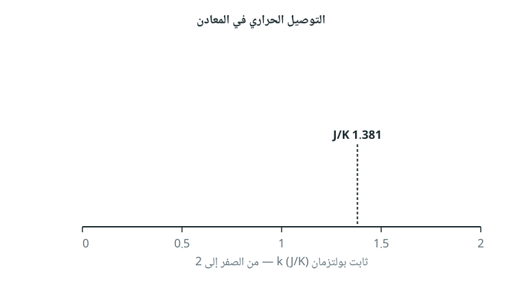

التوصيل الحراري في المعادن
Thermal conductivity in metals
التوصيل الحراري في المعادن ينقل الحرارة بحاملاتها الإلكترونية أساساً، فترتفع الموصلية الكهربائية والموصلية الحرارية معاً. قانون فيدمان–فرانتز يربط النسبتين بثابت لورنتز.
التوصيل الحراري في المعادن هو انتقال الطاقة الحرارية عبر الشبكة البلورية بحاملين: الإلكترونات الحرة وأمواج الشبكة (الفونونات). وفي المعادن الجيدة التوصيل يغلب إسهام الإلكترونات، لأنها حرة الحركة وسريعة، وهو ما يفسّر اقتران الموصلية الكهربائية بالموصلية الحرارية: المعادن الجيدة للكهرباء جيدة للحرارة. ويعبّر عن هذا الاقتران بقانون فيدمان–فرانتز، الذي ينص على أن نسبة الموصلية الحرارية إلى الموصلية الكهربائية تتناسب مع درجة الحرارة المطلقة، ومعامل التناسب هو عدد لورنتز. ويُستعمل القانون تقديراً لا قياساً دقيقاً، لأن العدد يتغير قليلاً بين المعادن وفي درجات الحرارة المنخفضة. مثال: النحاس موصليته الحرارية نحو 400 واط/(متر·كلفن)، والألمنيوم نحو 237، والفولاذ المقاوم للصدأ نحو 16، والفرق بينها يعكس حرية إلكتروناتها.
كيف تعمل الظاهرة؟
في المعدن تتحرك إلكترونات التوصيل بحرية نسبية بين الأيونات الموجبة للشبكة. وحين يوجد تدرج حراري، تنتقل الإلكترونات السريعة من الطرف الساخن إلى البارد حاملة طاقتها الحركية، وتُعيد توزيعها عبر تصادماتها. وفي الوقت نفسه تنقل الفونونات اهتزازات الشبكة. وفي المعادن النقية الجيدة يغلب الإسهام الإلكتروني، لأن كثافة الإلكترونات الحرة عالية وسرعتها كبيرة. وحين تزيد الشوائب والعيوب البلورية، تزيد تصادمات الإلكترونات فتنقص الموصلية الحرارية والكهربائية معاً. ولهذا فالسبائك أقل توصيلاً من المعادن النقية.
العلاقة بالأرقام
قانون فورييه q = −k·dT/dx، ووحدته W/(m·K). وقانون فيدمان–فرانتز k/σ = L·T، حيث σ الموصلية الكهربائية بوحدة S/m وL عدد لورنتز ≈ 2.44×10⁻⁸ W·Ω/K². مثال: نحاس σ ≈ 5.96×10⁷ S/m عند 300 K، فالتقدير k = L·T·σ = 2.44×10⁻⁸ × 300 × 5.96×10⁷ = 436 W/(m·K)، وهو قريب من القيمة المقيسة نحو 400. والفرق يبيّن أن القانون تقدير لا قياس.
مفاهيم متقاربة
الموصلية الحرارية معدل انتقال طاقة لكل متر وكلفن، والسعة الحرارية كمية طاقة لتسخين كتلة درجة. والفرق عن الانتشارية الحرارية α = k/(ρ·c_p) أن الأخيرة تقيس سرعة انتشار التغير لا معدل النقل. وقانون فيدمان–فرانتز ليس تاماً: عدد لورنتز يتغير بين المعادن، ويختلف في درجات الحرارة المنخفضة. والتوصيل في المعادن ليس حملاً: لا تنتقل كتلة. والتوصيل ليس إشعاعاً: لا يحتاج فراغاً.
حدود التطبيق
قانون فيدمان–فرانتز تقدير لا قياس دقيق، ولا يصحّ استعماله في أشباه الموصلات والعوازل. وفي درجات الحرارة المنخفضة جداً يتغير عدد لورنتز، وفي المعادن فائقة التوصيل تنعدم المقاومة الكهربائية بينما لا تنعدم الموصلية الحرارية، فينهار القانون. وفي السبائك والمواد غير المتبلورة يغلب الإسهام الفونوني، فيقلّ الاقتران. ولا تُعمَّم قيمة موصلية مادة على شكلها أو على درجات حرارة بعيدة عن مجال القياس.

| الكمية | القيمة | المصدر |
|---|---|---|
| عدد لورنتز L (تقريب الحر الإلكتروني) | 2.44×10⁻⁸ W·Ω/K² | [3] |
المصادر
- 1 The International System of Units (SI), 9th edition (2019) — BIPM — Bureau International des Poids et Mesures (2019). www.bipm.org/en/publications/si-brochure · اطُّلع عليه 2026-11-21
- 2 CODATA Value: elementary charge — NIST — CODATA 2022 recommended values (2024). physics.nist.gov/cgi-bin/cuu/Value?e · اطُّلع عليه 2026-11-21
- 3 CODATA Value: Stefan-Boltzmann constant — NIST — CODATA 2022 recommended values (2024). physics.nist.gov/cgi-bin/cuu/Value?sigma · اطُّلع عليه 2026-11-21
استشهد بهذا المصطلح
الصيغتان مبنيتان من بيانات الصفحة نفسها: العنوان والتاريخ ورابط النسخة المنشورة.
التوصيل الحراري في المعادن — Thermal conductivity in metals. (2026). ديوان المعرفة — انفراد. https://infiradev.com/diwan/terms/term-thermal-conductivity-metal.html
@misc{term-thermal-conductivity-metal2026,
title = {التوصيل الحراري في المعادن},
titleaddon = {Thermal conductivity in metals},
howpublished = {{ديوان المعرفة — انفراد} — مرجع علمي عربي},
year = {2026},
url = {https://infiradev.com/diwan/terms/term-thermal-conductivity-metal.html},
urldate = {2026-11-26},
note = {مراجعة علمية: hermes (مراجعة معتمدة 2026-11-26)}
}
راجعه: hermes (مراجعة معتمدة 2026-11-26) · 2026-11-26 · آخر تحديث 2026-11-21